Sasuke: all 42 neutral redraw candidates
NOT APPROVED. Diagnostic cells below use anatomical sidecars, not a successful production atlas. Strict pack failures remain blockers. Each source landmark is inferred under hair/clothing with stated uncertainty. Do not treat ref, exempt, or unmeasured as ok.
Approved neutral target: skeleton194.882px, inferred skull24.487px ±2.84px. Body and limb ratios require visual review separately from the hair probe.
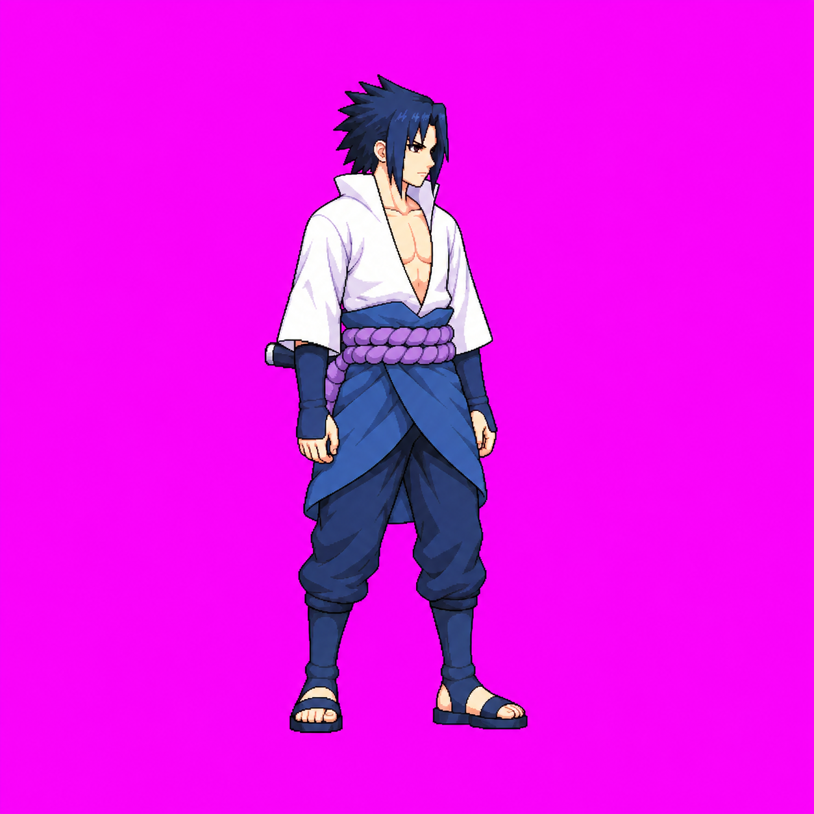
Exact frame measurements and placements
idle v06 — ref
8 expected / 8 detected. Head/idle 1.000. A/B inferred crown158 chin260 about102 +/-8px. Neutral-relative torso/shin correction, both parts total3 attempts. Implied skeleton from crown158 tosoles958 about800 source =>192.05 gamepx, stance slightly bent; neutral standing194.882. Covered knee/hip landmarks uncertain; independent lead review pending.
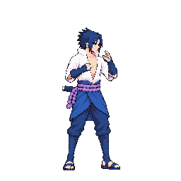
f1 head 1.029
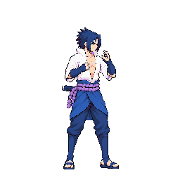
f2 head 1.029
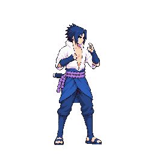
f3 head 1.000
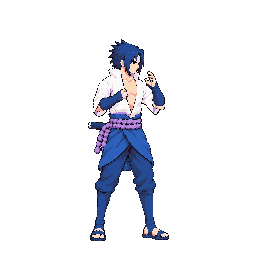
f4 head 1.000
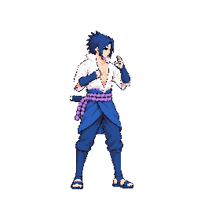
f5 head 0.995
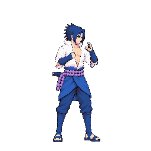
f6 head 1.000
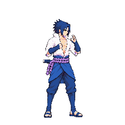
f7 head 1.000
Raw immutable source

run v03 — ok
8 expected / 8 detected. Head/idle 1.029. A skull axis88 +/-7source multiplied measured stitch0.8328; B skull74 +/-7source. Preserve neutral target and limb lengths; running tilt makes vertical height invalid.
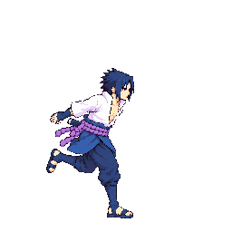
f0 head 1.029
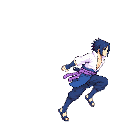
f1 head 1.022
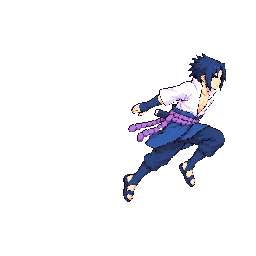
f2 head 1.029
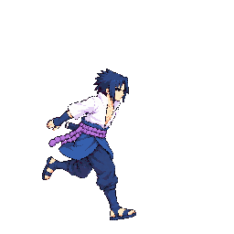
f3 head 1.030
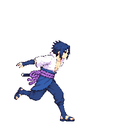
f4 head 1.029
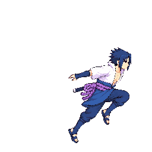
f5 head 1.029
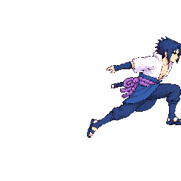
f6 head 1.029 right 6px
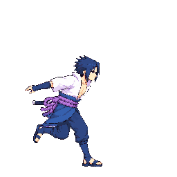
f7 head 1.014
Raw immutable source
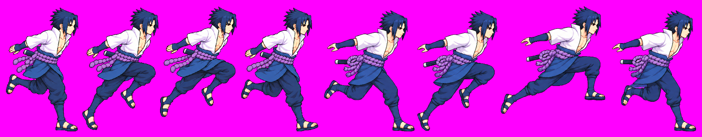
dash v02 — ok
2 expected / 2 detected. Head/idle 1.041. Crown~273 to chin~379 same nearvertical head axis bothframes +/-8source. Preserve torsolean and extended legs, never posedbboxfit.
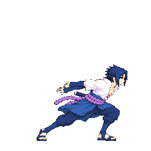
f0 head 1.039
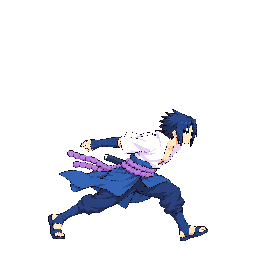
f1 head 1.042
Raw immutable source
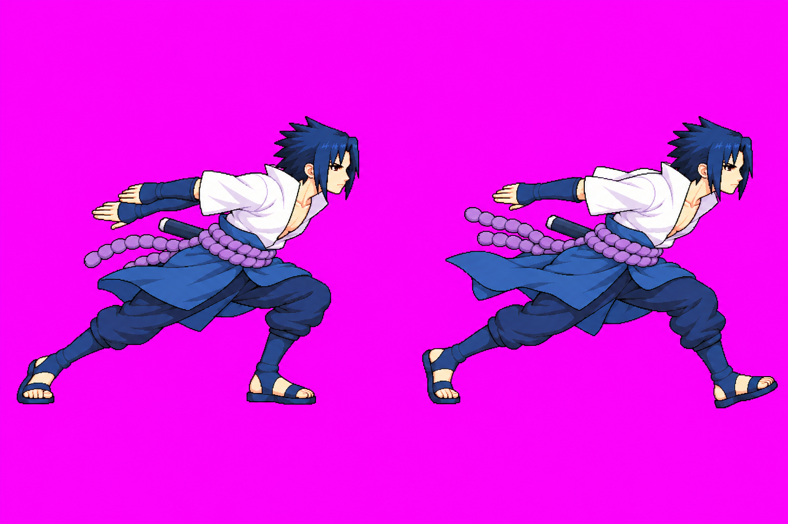
backDash v03 — ok
3 expected / 3 detected. Head/idle 1.028. Crown/chin near256/356 f0,178/278 f1; +/-12 sourcepx. Torso/shins lengthened attempt2.
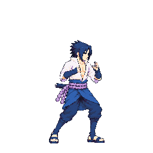
f0 head 1.030
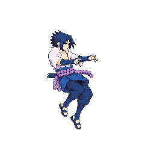
f1 head 1.028
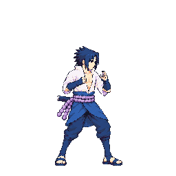
f2 head 1.025
Raw immutable source
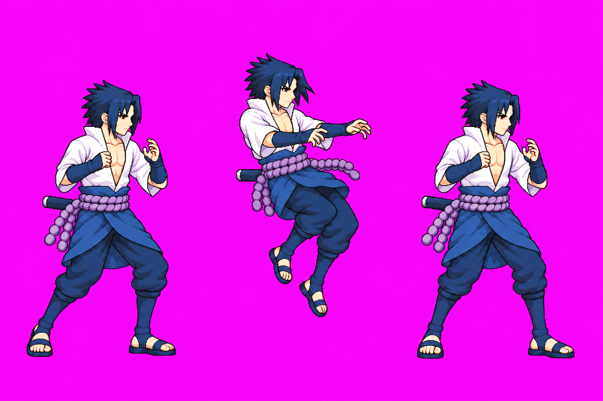
superDash v03 — ok
2 expected / 2 detected. Head/idle 1.044. Native1774x887; crown176/chin298, +/-12source. Attempt3 lengthens torso/shins; posed airborne axis, cap reached.
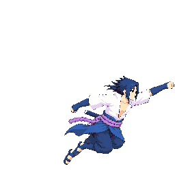
f0 head 1.041
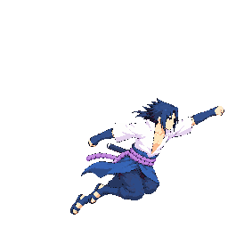
f1 head 1.047
Raw immutable source
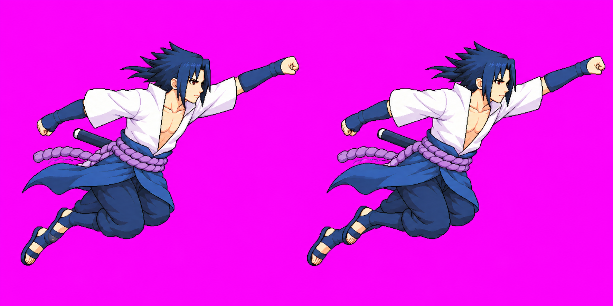
jumpSquat v02 — unmeasured
1 expected / 1 detected. Head/idle 1.000. Inferred crown y290 to chin410 along nearvertical axis, +/-10source. Preserve crouch not fitted standing height.
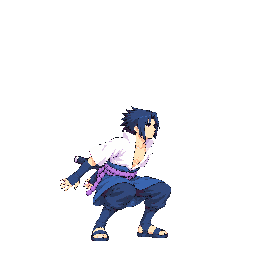
f0 head 1.000
Raw immutable source
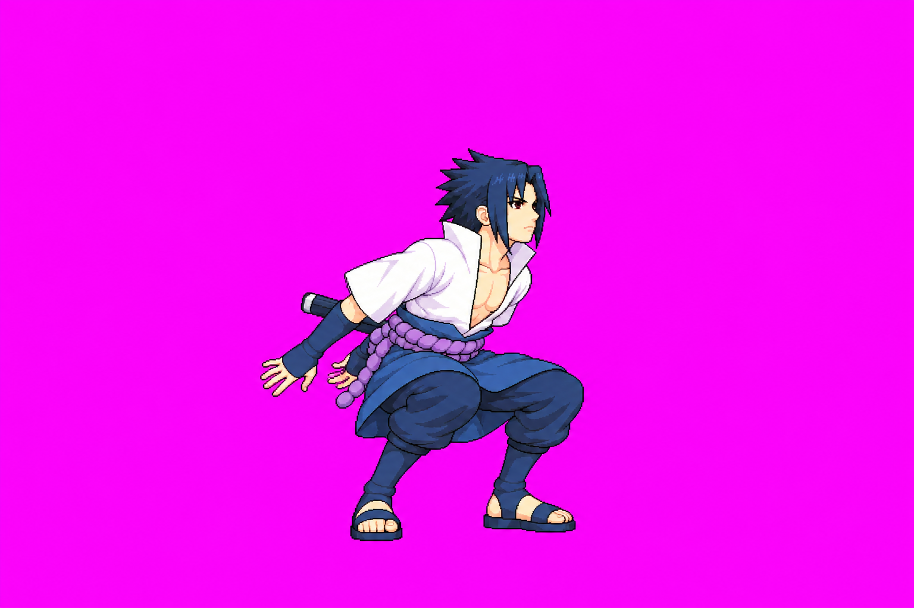
jumpUp v02 — exempt
2 expected / 2 detected. Head/idle 0.686. Nearvertical head axis: inferred crown162/chin255 and184/277;93 +/-8source. Raisedfist poses airborne, worldrenderer controlsjumpheight.
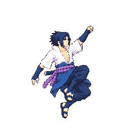
f0 head 0.686
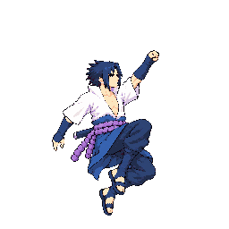
f1 head 0.686
Raw immutable source
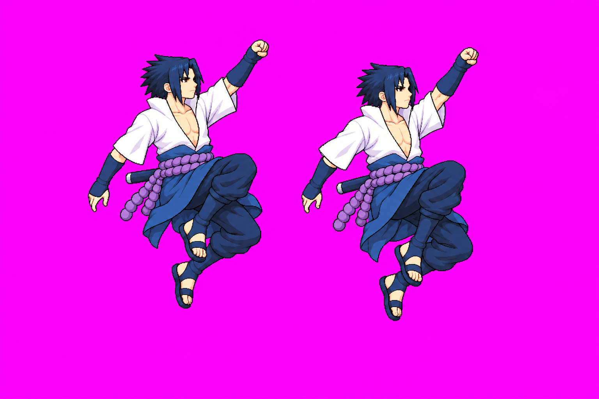
jumpFall v02 — ok
2 expected / 2 detected. Head/idle 1.057. Skullcrown185 chin289, +/-8source; upwards hairspikes are falling airflow, not anatomicalskull.
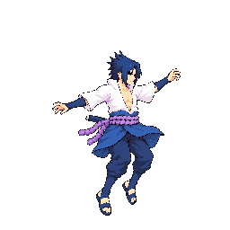
f0 head 1.057
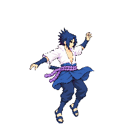
f1 head 1.057
Raw immutable source
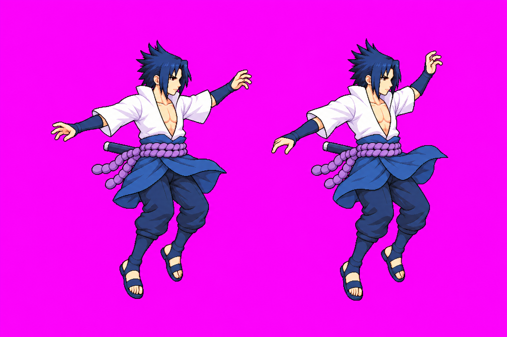
land v02 — uniform
2 expected / 2 detected. Head/idle 1.072. Inferred crown356/chin467 f0 and199/310 f1,111 +/-8source; groundedsoles samefloor. Hair shape changed downward with pose.
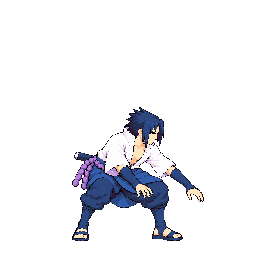
f0 head 1.114
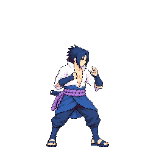
f1 head 1.029
Raw immutable source
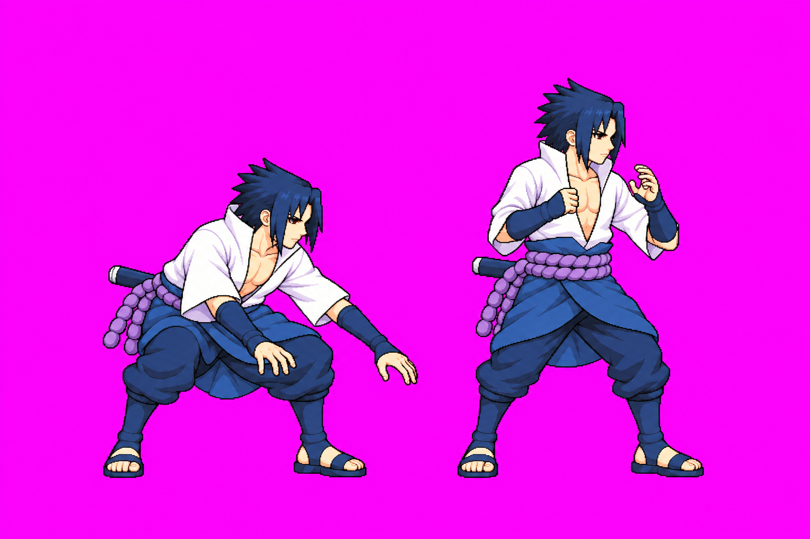
light1 v05 — ok
7 expected / 7 detected. Head/idle 1.000. Source inferred skull A77, B101 +/-12px; measured skull ratio used for stitch, not old public idle hair refinement. Longer torso/shins correction. Skull crown under hair remains uncertain; independent body review and technical holds apply. Not approved.
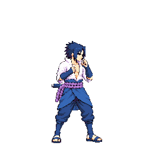
f0 head 1.004
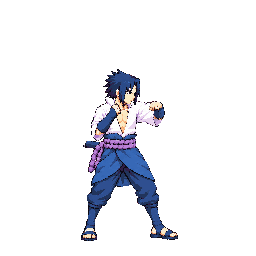
f1 head 1.004
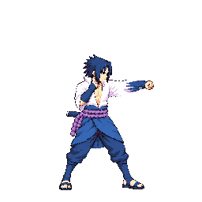
f2 head 1.029
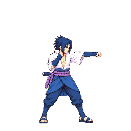
f3 head 1.000
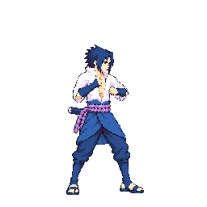
f4 head 0.981
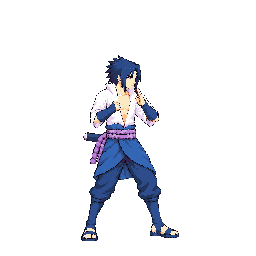
f5 head 0.976
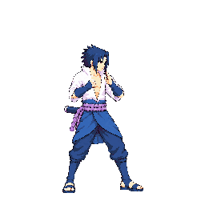
f6 head 1.000
Raw immutable source
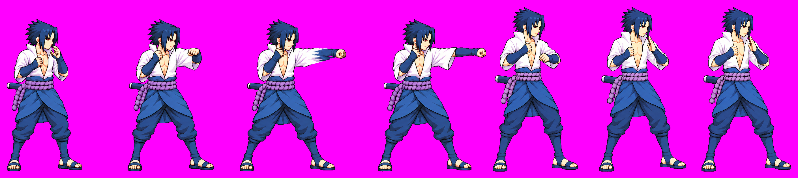
light2 v04 — ok
7 expected / 7 detected. Head/idle 1.037. Source inferred skull A97, B107 +/-12px; measured skull ratio used for stitch, not old public idle hair refinement. Longer torso/shins correction. Skull crown under hair remains uncertain; independent body review and technical holds apply. Not approved.
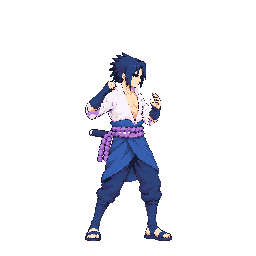
f0 head 1.028
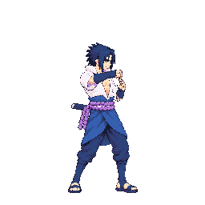
f1 head 1.037
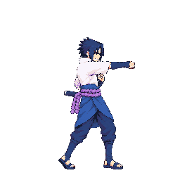
f2 head 1.031
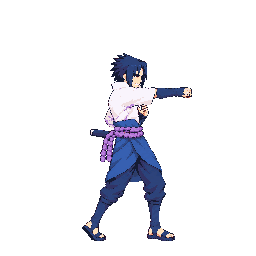
f3 head 1.029
Raw immutable source
light3 v04 — ok
7 expected / 7 detected. Head/idle 0.941. Source inferred skull A81, B108 +/-12px; measured skull ratio used for stitch, not old public idle hair refinement. Longer torso/shins correction. Skull crown under hair remains uncertain; independent body review and technical holds apply. Not approved. Enlarged source review corrects A inferred crown155/chin249=94 +/-10px, B crown155/chin257=102 +/-10px. Initial A81 estimate was a measurement error. Sidecar follows observed landmarks; raw stitch unchanged.
Raw immutable source
light4 v04 — pop
8 expected / 8 detected. Head/idle 0.935. A source retained; B final original attempt3 corrects torso/shins. Inferred B skull 108 +/-12sourcepx, multiplied measured stitch factor. Head landmarks under hair uncertain. Independent limb-ratio QA and remaining technical holds apply; no approval.
Raw immutable source
heavy v08 — drift
8 expected / 8 detected. Head/idle 0.916. A source retained; B final original attempt3 corrects torso/shins. Inferred B skull 96 +/-12sourcepx, multiplied measured stitch factor. Head landmarks under hair uncertain. Independent limb-ratio QA and remaining technical holds apply; no approval.
Raw immutable source
airLight1 v02 — ok
5 expected / 5 detected. Head/idle 0.971. Source inferred crown170/chin250, +/-8px each; same pose camera. Manual inferred landmarks, not auto approval. Neutral target uncertainty about +/-2.84gamepx.
Raw immutable source
airLight2 v03 — ok
5 expected / 5 detected. Head/idle 1.057. Inferred crown176/chin254, +/-8px each; hair apex excluded. Manual inferred landmarks, not auto approval. Neutral target uncertainty about +/-2.84gamepx.
Raw immutable source
airLight3 v04 — drift
6 expected / 6 detected. Head/idle 0.940. A source retained; B final original attempt3 corrects torso/shins. Inferred B skull 112 +/-12sourcepx, multiplied measured stitch factor. Head landmarks under hair uncertain. Independent limb-ratio QA and remaining technical holds apply; no approval.
Raw immutable source
airHeavy v03 — ok
6 expected / 6 detected. Head/idle 0.971. A inferred crown247/chin347, B crown246/chin346, +/-10px; raised arms overlap hair so probe may need separate evidence. Manual inferred landmarks, not auto approval. Neutral target uncertainty about +/-2.84gamepx. Enlarged source review uses per-frame crown/chin rather than blanket100: A244/349,230/326,300/396,310/413; B250/344,225/322, all +/-10px and head-axis rotation uncertain. A multiplied recorded stitch. Raised-arm mask exceptions remain only f1/f4; no true drift exemption.
Raw immutable source
guard v02 — exempt
2 expected / 2 detected. Head/idle 1.432. Same axis skull as idle: crown~177 chin283 and crown~193 chin299; +/-8source. Neutral target121*194.882/963. Chin partly arm occluded; retain same anatomy rather than hair bounding box.
Raw immutable source
block v02 — ok
2 expected / 2 detected. Head/idle 0.960. Manual crown/chin axis estimate +/-10source; inspect mask/limbs before gate exemptions. Candidate not approved.
Raw immutable source
hurtHigh v04 — ok
3 expected / 3 detected. Head/idle 0.943. Tilted crown-to-chin axes inferred100 +/-12px; first crown(210,174) chin(273,250) ~99px; f1 crown856,188 to914,270 ~100px. Third about1528,180 to1560,275. Final thirdattempt layout fix.
Raw immutable source
hurtLow v02 — ok
3 expected / 3 detected. Head/idle 1.025. Manual crown/chin axis estimate +/-10source; inspect mask/limbs before gate exemptions. Candidate not approved.
Raw immutable source
launched v02 — unmeasured
2 expected / 2 detected. Head/idle 1.112. Rotated skull axes inferred crown-to-chin about104 +/-12px; do not use vertical height. Manual inferred landmarks, not auto approval. Neutral target uncertainty about +/-2.84gamepx.
Raw immutable source
spin v02 — unmeasured
4 expected / 4 detected. Head/idle 1.200. Rotated skull axis first about crown280/chin380, others equivalent axis lengths +/-12px; view rotates and hair occludes. Manual inferred landmarks, not auto approval. Neutral target uncertainty about +/-2.84gamepx.
Raw immutable source
airRecover v02 — unmeasured
3 expected / 3 detected. Head/idle 1.086. Crown-to-chin along rotated axis about100 +/-12px; first crown262/chin362; third234/334. Manual inferred landmarks, not auto approval. Neutral target uncertainty about +/-2.84gamepx.
Raw immutable source
down v02 — unmeasured
2 expected / 2 detected. Head/idle 1.030. Rotated head axes: f0 inferred crown108,490 to chin176,534 gives81px; f1 crown846 to928 about82px. Use82 +/-8 same skull; no perspective shrink. Source pose floor contact checked afterpacking.
Raw immutable source
getup v02 — unmeasured
5 expected / 5 detected. Head/idle 0.964. Crown-to-chin along axis about86 +/-12px; source2172x724. Rotated f0/f1 low certainty. Pink ghost hand remains after3 attempts, do not approve. Manual inferred landmarks, not auto approval. Neutral target uncertainty about +/-2.84gamepx.
Raw immutable source
charge v06 — uniform
4 expected / 4 detected. Head/idle 0.833. Crown192/chin300 +/-12source. Attempt3 fixes growing hair and lengthens torso/shins. Remaining torso compression vs neutral possible; cap reached.
Raw immutable source
throw v02 — ok
4 expected / 4 detected. Head/idle 0.970. First inferred crown193/chin295; f1 about242/344; +/-10px. Manual inferred landmarks, not auto approval. Neutral target uncertainty about +/-2.84gamepx.
Raw immutable source
beamCharge v02 — exempt
3 expected / 3 detected. Head/idle 0.616. Inferred first crown226/chin316, second270/360 +/-10px; chin up. Manual inferred landmarks, not auto approval. Neutral target uncertainty about +/-2.84gamepx.
Raw immutable source
beamFire v02 — ok
3 expected / 3 detected. Head/idle 0.971. Inferred crown267/chin369 +/-10px each. Manual inferred landmarks, not auto approval. Neutral target uncertainty about +/-2.84gamepx.
Raw immutable source
vanish v02 — unmeasured
2 expected / 2 detected. Head/idle 0.986. First inferred crown337/chin447, second104/214 +/-10px; sliced body is intentional. Manual inferred landmarks, not auto approval. Neutral target uncertainty about +/-2.84gamepx.
Raw immutable source
stagger v03 — ok
4 expected / 4 detected. Head/idle 1.000. Final attempt3: first leansright thirdleansleft; torso/shins lengthened. Crown165 chin266 upright102 +/-10px; tilted crowns measured same skullaxis.
Raw immutable source
ko v03 — unmeasured
1 expected / 1 detected. Head/idle 0.914. Head rotated90degrees; inferred crownx182 to chinx328 along horizontal axis, +/-10source. Do not use vertical height. Floor depth variation reviewed afterpacking.
Raw immutable source
special v04 — pop
8 expected / 8 detected. Head/idle 1.073. A crown175/chin303, B crown216/chin292 +/-10px; PartB threeattempt cap reached. Manual inferred landmarks, not auto approval. Neutral target uncertainty about +/-2.84gamepx.
Raw immutable source
intro v02 — ok
4 expected / 4 detected. Head/idle 0.960. Inferred crown173/chin275 +/-10px each; neutral torso/shin audit pending. Manual inferred landmarks, not auto approval. Neutral target uncertainty about +/-2.84gamepx.
Raw immutable source
taunt v02 — ok
2 expected / 2 detected. Head/idle 1.000. Inferred crown124/chin236 +/-10px each. Manual inferred landmarks, not auto approval. Neutral target uncertainty about +/-2.84gamepx.
Raw immutable source
win v03 — ok
4 expected / 4 detected. Head/idle 1.013. Native1774x887; inferred rear crown120/chin212 +/-12source. Attempt2 lengthens torso/shins, rear skull uncertain.
Raw immutable source
specialForward v03 — pop
7 expected / 7 detected. Head/idle 1.086. A inferred crown187/chin263; B143/231 +/-10px; native2172x724. Per-part stitch factor applied. Manual inferred landmarks, not auto approval. Neutral target uncertainty about +/-2.84gamepx.
Raw immutable source
specialUp v03 — ok
6 expected / 6 detected. Head/idle 1.027. A first inferred crown470/chin552, B first tiltedaxis110 +/-12px; overhead fist separate from skull. Manual inferred landmarks, not auto approval. Neutral target uncertainty about +/-2.84gamepx.
Raw immutable source
specialDown v03 — ok
4 expected / 4 detected. Head/idle 0.990. Final attempt3: near RIGHT arm corrected and torso/shins lengthened. Inferred crown156 chin262 about106 +/-10px. f0 rediris incorrectly persists: cap reached, hold.
Raw immutable source
superPose v02 — ok
4 expected / 4 detected. Head/idle 1.035. Inferred crown166/chin266 +/-10px; fingers overlap temple; pinwheel needs packed close-up. Manual inferred landmarks, not auto approval. Neutral target uncertainty about +/-2.84gamepx.
Raw immutable source